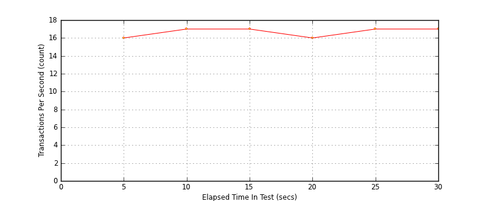
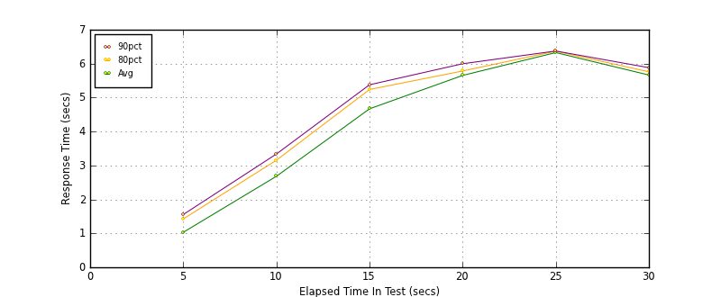
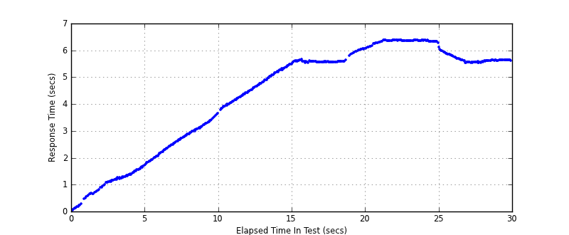

Performance Results Report
Summary
transactions: 609
errors: 0
run time: 30 secs
rampup: 10 secs
test start: 2014-01-15 15:21:30
test finish: 2014-01-15 15:21:59
time-series interval: 5 secs
workload configuration:
| group name | threads | script name |
|---|
| user_group-1 | 100 | read_user.py |
All Transactions
Transaction Response Summary (secs)
| count | min | avg | 80pct | 90pct | 95pct | max | stdev |
|---|
| 609 | 0.053 | 4.349 | 5.935 | 6.349 | 6.364 | 6.390 | 1.902 |
Interval Details (secs)
| interval | count | rate | min | avg | 80pct | 90pct | 95pct | max | stdev |
|---|
| 1 | 82 | 16.40 | 0.053 | 1.031 | 1.424 | 1.555 | 1.643 | 1.744 | 0.466 |
| 2 | 86 | 17.20 | 1.758 | 2.681 | 3.155 | 3.337 | 3.452 | 3.649 | 0.513 |
| 3 | 89 | 17.80 | 3.779 | 4.669 | 5.238 | 5.378 | 5.436 | 5.538 | 0.511 |
| 4 | 80 | 16.00 | 5.531 | 5.653 | 5.784 | 5.997 | 6.041 | 6.061 | 0.164 |
| 5 | 85 | 17.00 | 6.086 | 6.327 | 6.368 | 6.372 | 6.375 | 6.390 | 0.070 |
| 6 | 87 | 17.40 | 5.517 | 5.664 | 5.760 | 5.882 | 5.950 | 6.040 | 0.128 |
Graphs
Response Time: 5 sec time-series
Response Time: raw data (all points)
Throughput: 5 sec time-series

Custom Timer: get_tweets
Timer Summary (secs)
| count | min | avg | 80pct | 90pct | 95pct | max | stdev |
|---|
| 509 | 0.052 | 4.348 | 5.935 | 6.349 | 6.363 | 6.390 | 1.902 |
Interval Details (secs)
| interval | count | rate | min | avg | 80pct | 90pct | 95pct | max | stdev |
|---|
| 1 | 82 | 16.40 | 0.052 | 1.031 | 1.424 | 1.554 | 1.643 | 1.744 | 0.466 |
| 2 | 86 | 17.20 | 1.758 | 2.680 | 3.154 | 3.337 | 3.452 | 3.649 | 0.513 |
| 3 | 89 | 17.80 | 3.778 | 4.669 | 5.238 | 5.377 | 5.436 | 5.538 | 0.511 |
| 4 | 80 | 16.00 | 5.531 | 5.653 | 5.784 | 5.997 | 6.041 | 6.061 | 0.164 |
| 5 | 85 | 17.00 | 6.086 | 6.326 | 6.367 | 6.372 | 6.374 | 6.390 | 0.070 |
| 6 | 87 | 17.40 | 5.516 | 5.664 | 5.760 | 5.882 | 5.950 | 6.040 | 0.128 |
Graphs
Response Time: 5 sec time-series

Response Time: raw data (all points)

Throughput: 5 sec time-series